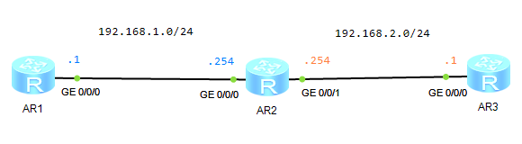

| 命令 | 说明 |
| system-view | 进入系统视图（system view） |
| sysname xxx | 更改设备命令提示符 |
| undo info-center enable | 关闭回显信息 |
| interface type slot/sub/port | 选择端口 |
| undo shutdowm | 开启端口；默认是打开的 |
| ip route-static NETWORK MASK NEXT-HOP | 配置静态路由 |
| display interface brief | 查看所有端口概要信息 |
| display interface GigabitEthernet 0/0/0 | 查看特定端口信息 |
| display ip routing-table | 查看路由表 |
| display ip routing-table protocol static | 仅仅查看静态路由 |
| display version | 显示设备版本号 |
| undo | 删除配置命令 |
| quit | 返回上一级视图 |
| return | 返回用户视图 |
| save | 保存配置（用户模式 user view） |
